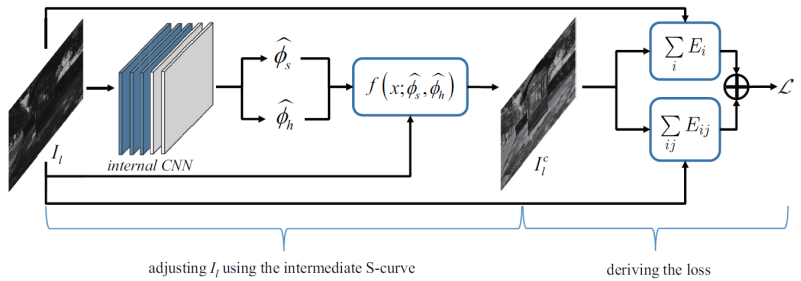
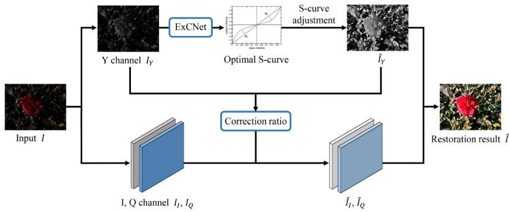

|
ExCNet: A Framework for Zero-Shot Restoration of Back-lit Images Using Deep Internal Learning School of Software Engineering, Tongji University, Shanghai, China |
Introduction
This is the
website for our work "Zero-Shot Restoration of Back-lit Images Using Deep
Internal Learning".
How to restore back-lit images still remains a challenging task.
State-of-the-art methods in this field are based on supervised learning and thus
they are usually restricted to specific training data. In this paper, we propose
a "zero-shot" scheme for back-lit image restoration, which exploits the power of
deep learning, but does not rely on any prior image examples or prior training.
Specifically, we train a small image-specific CNN, namely ExCNet (short for
Exposure Correction Network) at test time, to estimate the ``S-curve'' that best
fits the test back-lit image. Once the S-curve is estimated, the test image can
be then restored straightforwardly. ExCNet can adapt itself to different
settings per image. This makes our approach widely applicable to different
shooting scenes and kinds of back-lighting conditions. Statistical studies
performed on 1512 real back-lit images demonstrate that our approach can
outperform the competitors by a large margin. To the best of our knowledge, our
scheme is the first unsupervised CNN-based back-lit image restoration method. To
make the results reproducible, the source code is available on this website.
Key Ideas of ExCNet
(1) The core of our approach is a specially designed CNN, namely ExCNet (Exposure Correction Network). Given a test back-lit image I, ExCNet can be trained in an image specific way to estimate the parametric "S-curve" that best fits I. S-curve is widely adopted by photo editing softwares as an interactive tool for manually correcting ill-exposed images. When S-curve is ready, I can be restored straightforwardly. To our knowledge, our work is the first unsupervised learning framework to correct image exposure automatically. Our image-specific method can be widely applicable to different shooting scenes and kinds of lighting conditions.
(2) When designing ExCNet, a key issue is how to devise a loss function that can evaluate an image's degree of being ill-exposed. To this end, motivated by the formulation of MRF (Markov Random Field), we design a block-based loss function, which tends to maximize the visibility of all blocks while keeping the relative difference between neighboring blocks.
(3) Due to
the CNN structure of ExCNet, our method could learn the mapping relationship
between images and their best "S-curve" parameters. Thus along with the
increasing of processed images, ExCNet takes less iterations to converge to the
optimized curve when facing an unseen image. Even though it is trained at test
time, it runs very fast since the network is small and the training usually
converges after several iterations. Besides, when handling a video stream, the
correction of subsequent frames could be guided by the parameters of the
previous frames, which would not lead to significant flickering artifacts and
have a relatively low computational cost. Compared with typical supervised
learning based schemes, ExCNet is more suitable to be implemented in a mobile or
on-chip system.

The structure of ExCNet. Each training iteration of ExCNet can be conceptually considered as having two stages, adjusting Il using the intermediate S-curve and deriving the loss.

The overall pipeline of back-lit image restoration using ExCNet. The restoration pipeline comprises three major steps, S-curve estimation, luminance channel restoration, and chrominance adjustment.
Source Codes
1. ExCNet.ipynb
This is the code of ExCNet, including the network model and the back-lit images restoration procedure. The prerequisites for running the .ipynb file is the Tensorflow environment and Jupyter Notebook.
2. BacklitImages.zip, BacklitVideos.zip
These are some back-lit images and videos for testing. The extract codes are 'v752' and 'yerr' respectively.
Last update: Sep. 11, 2019